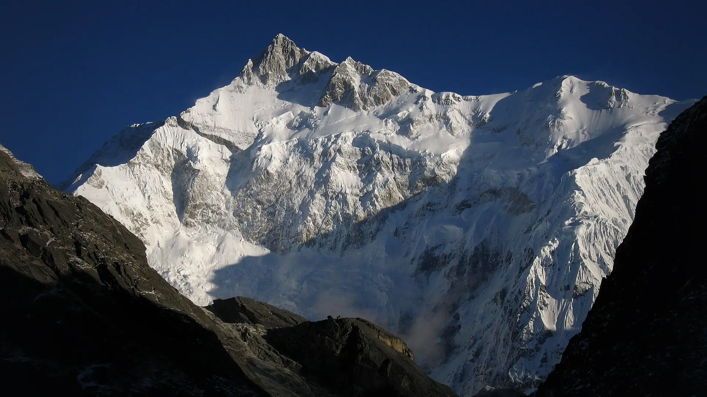

02Day 2 · Yuksom · 1,720 mkm 0.1
Sikkim's first capital
150kmFrom Siliguri · 7–8 h, driven on day 1
Yuksom, at about 1,720 m, was the first capital of Sikkim. The monasteries of Tashiding and Katok are nearby.

Photo: Ashinpt at enwiki, CC BY-SA 3.0गोएचा ला · West Sikkim, Sikkim & Darjeeling
The trek in one line, and what you can do with it.
A long, hard walk through Kanchenjunga National Park to the foot of the world's third-highest mountain.
9 stops on the map, then the climb. Scroll the stops and the map follows.
02Day 2 · Yuksom · 1,720 mkm 0.1
150kmFrom Siliguri · 7–8 h, driven on day 1
Yuksom, at about 1,720 m, was the first capital of Sikkim. The monasteries of Tashiding and Katok are nearby.
02Day 2 · Sachenkm 6.0
5–5.5hWalking · From Yuksom
The first camp is Sachen, a short day in from Yuksom.
03Day 3 · Tshoka · 2,900 mkm 9.8
5–5.5hWalking · Via Bakhim
Up through Bakhim to Tshoka at about 2,900 m, where a monastery stands beside a still pond.
04Day 4 · Dzongri · 3,970 mkm 16.2
6–8hWalking · Via Phedang
Through Phedang to Dzongri at about 3,970 m. Winds are strong here and the nights are cold.
06Day 6 · Thansingkm 22.5
4–5hWalking · From Dzongri
Down from Dzongri and up the valley to Thansing, a camp at the foot of Pandim.
07Day 7 · View Point 1 · 4,602 mkm 30.9
12–13hRound trip · From Thansing
Past Samiti Lake to View Point 1 at about 4,602 m: "the closest you can get to Mt. Kanchenjunga without climbing it".
07Day 7 · Thansingkm 39.2
12–13hToday · The longest day
Back down past Samiti Lake and Lamuney to Thansing.
08Day 8 · Tshoka · 2,900 mkm 51.1
6–7hWalking · From Thansing
A long descent from Thansing to Tshoka. In December some sections can be icy.
09Day 9 · Yuksom · 1,720 mkm 60.0
6–7hWalking · From Tshoka
Back through the forest to Yuksom. Day 10 is the drive to Siliguri.
Best in Mar–Apr, Oct–Dec.
Dark: the months the trek’s sources call its best. Mid: possible. See all treks in March.
 Photo: Ashinpt at enwiki, CC BY-SA 3.0
Photo: Ashinpt at enwiki, CC BY-SA 3.0
Base prices from 7 operators’ own pages, per person. GST and travel are often extra. Treqz sells nothing.
The practical things, then the questions people ask.
One thing from each part of the packing list, so nothing big is missed. The full list, with where to rent and the daily rates, is on the 3D page.
The full packing list →


The nearest ATMs are in Yuksom, Pelling and Gangtok. There are none on the trail.
Bikat AdventuresUsually no signal beyond Yuksom. You may catch some near the first hut at Tshoka.
Bikat AdventuresThere are no shops on the route. A hut caretaker may sell tea or snacks, at two or three times Yuksom prices.
Limboo Homestay, YuksomIndians need a passport, voter ID or driving licence. Aadhaar is not accepted. Bring two photos and a fitness certificate from a government doctor.
Trek in SikkimAutumn nights fall to −5 to −10 °C. Dzongri, Thansing and Lamuney are the coldest camps.
Limboo Homestay, YuksomAbout 60.1 km of walking over 10 days on the trail.
The highest point is 4,602 m, about 2,850 m above the start.
Its sources grade it Hard.
Mar–Apr, Oct–Dec.
₹19,500 to ₹42,700 per person: base prices from 7 operators' own pages. GST and travel are often extra.
Usually no signal beyond Yuksom. You may catch some near the first hut at Tshoka.
Indians need a passport, voter ID or driving licence. Aadhaar is not accepted. Bring two photos and a fitness certificate from a government doctor.
The nearest ATMs are in Yuksom, Pelling and Gangtok. There are none on the trail.
Down jacket, Thermal innerwear, Warm fleece, Waterproof jacket and pants, Trekking pants ×2–3, Woollen cap and gloves, High-ankle waterproof boots, Sandals or camp shoes. The full list is on the 3D page.
Yes: Dec is among its best months.
Its sources grade it Hard and it takes 10 days on the trail, with a highest point of 4,602 m.
Dzongri, Green Lake, Sandakphu, Bailey Trail (Tawang), David Scott Trail.


Treks in March · Treks in April · Treks in October · Treks in November · Treks in Sikkim and Darjeeling · Difficult Treks in Sikkim and Darjeeling · Winter Treks in India · High-Altitude Treks in India (Above 4,500 m) · Highest Treks in India · Longest Treks in India · Goechala vs Sandakphu · Goechala vs Dzongri · Goechala vs Green Lake · Free trek finder · All treks in 3D